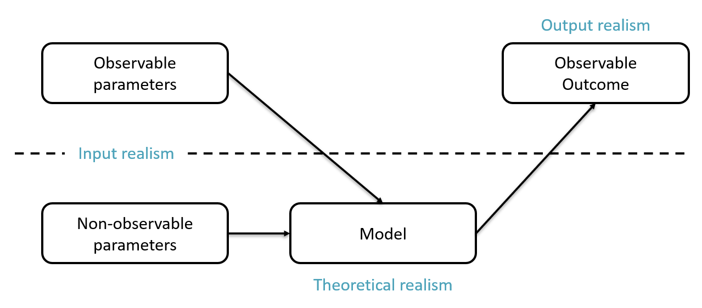
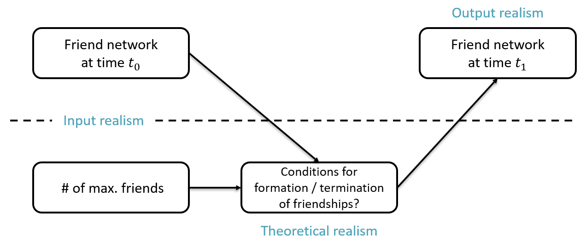

Experimental Sociology - Week 01
Introduction
2025-04-09
Course Overview
🔍 What is This Course About?
- Hands on course that combines ES & CSS.
- Integrate analytical and computational methods:
- Analytical methods – game theory & differential equations.
- Computational methods – agent-based models (ABMs).
- These methods help us:
- Derive hypotheses.
- Enhance experimental design.
🏁 Goals
By the end of this course, you’ll:
- Understand how to model social situation analytically and computationally.
- Design, program, and modify ABMs.
- Derive theoretical guided (and empirically calibrated) hypotheses.
- Improve experimental design using analytical & computational methods.
🧩 Course Structure
- Flipped Classroom Approach:
- 🏠 Before class: Read and study core concepts at your own pace.
- 🏫 In class: Discuss, solve problems, and apply concepts.
- Mix of:
- Hands-on coding.
- Group work & discussions.
- Problem-solving.
📖 Weekly Readings & Exercises
- Materials provided weekly at sgrehl.github.io.
- Some material might also be at moodle.
- Moodle password: ilovecss
- Read and engage with the assigned texts.
- Try to solve the exercises.
- Come to class prepared with questions and insights.
🛠️ Requirements
🗣️ Communication
- Open communication is key – feel free to talk to us anytime.
- Questions or ideas? Reach out – we’re collaborators, not just instructors.
- This course is newly designed, so your feedback matters.
🗓️ Course Program
Our schedule:
- Week 1: Introduction
- Week 2–3: Analytical Solutions & (Evolutionary) Game Theory
- Week 4: ABMs: Basics
- Week 5–6: Evolutionary ABMs
- Week 7–9: Sensitivity Analysis & Calibration
- Week 10: Machine Learning Basics
- Week 11: Open Lab Session
- Week 12: Statistical Power & Experimental Design
- Week 13–14: Term Paper Presentations
Questions?
Progress in the Social Sciences
🔬 The Ideal Research Process
- 💡 We have a hypothesis about the effect of a treatment on a dependent variable.
- 🧪 We run an experiment.
- 📊 We estimate statistical models & adapt our knowledge.
Problems
- How to derive good hypotheses?
- How to efficiently test hypotheses?
🎓 From a Theory to a Hypothesis
- Theory: A systematically organized set of interrelated statements that explains and predicts phenomena (Braun 2008).
- Model: An representation of a formalized theory to address a specific problem.
- Proposition: Universal statement about the relationship between one or more concepts.
- Hypothesis: A specific, testable prediction.
🍪 Example
- Theory: Economic theory of Rational Choice.
- Model: Model of supply and demand.
- Proposition: When the price of a normal good rises, the demand for it falls.
- Hypothesis: If the price of rice rises, the demand for rice falls.
Caution
Experiments test hypotheses, not propositions.
🤔 Deriving a Hypothesis
In science, there are several key methods for deriving a hypothesis:
Logical Reasoning
→ Deductions based on existing theoretical assumptions and prior knowledge.Formalized Model
→ Using structured frameworks or mathematical representations to explore implications.Simulation
→ Simulating individual entities to observe emergent patterns within complex systems.
Let’s examine the strengths and limitations of each approach.
🎭 Tocqueville Paradox
Why does an objective improvement in social conditions lead to greater dissatisfaction (Tocqueville 2004, [1835])?
Stouffer et al. (1949) proposed an explanation based on logical arguments:
- Social change creates new opportunities for upward mobility (promotion).
- Being promoted is better than not applying for promotion.
- However, applying comes with costs – time, effort, risk of rejection:
- Therefore, not applying is better than being rejected.
- As more people apply and only some succeed, dissatisfaction grows among those who fail.
Dissatisfaction increases when objective conditions improve, because rising expectations aren’t met for a majority.
Tocqueville Paradox – A Closer Look
Not every social improvement triggers the Tocqueville Paradox.
So, when and why does it occur? Let’s explore:
- A TP is triggered if: rejected > promoted.
- A person is more likely to apply …
- The more the benefits outweigh the costs,
- The greater the perceived chances of success.
- Success increases when:
- More positions for promotion are available,
- Fewer others are applying.
Tocqueville Paradox – DAG
Given this, we can derive a directed acyclic graph (DAG) representing the dynamics of the Paradox:
The overall effect of increasing vacancies on success is ambiguous it depends on how applicants respond, as their behavior is interdependent!
Formalized Model of Relative Frustration
Boudon (1977) developed the model of relative frustration, offering a game-theoretical perspective on promotion dynamics:
- \(f\) be the share of positions available for promotion,
- \(b\) the benefit of being promoted, and
- \(c\) the cost of applying for a promotion.
Using a mixed-strategy Nash equilibrium, Boudon (1977) derives the following result:
The optimal probability of applying: \(p = min \left( 1, f \cdot \frac{b}{c} \right)\)
Tocqueville Paradox – Visualization
🔑 Take-Away so Far
Logical Conclusions:
Simple and straightforward: They offer an accessible method for deriving predictions.
Limited precision: When verbal arguments point in different directions, their combined implications may become ambiguous, even if each argument is logically valid.
Formalized Models:
- More complex: Constructing these models requires a deeper level of analysis and rigor.
- Higher precision: They can yield more nuanced and detailed predictions.
⚙️ Limitations with Formalized Models
Oversimplification: Often reduce complex social realities to a few theoretical assumptions.
Homogeneity Assumption: Often assumes little to no individual variation or social diversity.
Analytical Challenges with Complexity: Addressing the above limitations often increases analytical complexity, potentially hindering the derivation of clear predictions (Balzer, Brendel, and Hofmann 2001).
But wait! There is a solution!
Agent-Based Modeling (ABM)
🧪 What is ABM?
A microsimulation approach that models how individual behaviors and circumstances shape complex, collective outcomes (cf. Manzo 2022).
Core Components:
Agents
→ Individuals or groups with defined properties and decision rules.Environment
→ The context or space in which agents operate (e.g., the network structure).Rules
→ Governing interactions, outcomes, and adaptation over time.
A Schematic Example of an ABM

Figure 2: Basic steps for a agent-based model.
🧲 Example – The Schelling Model
| Your browser must support JavaScript for the simulation to work. |
Round: 0
Satisfied: 0 %
(This example is based on Schelling (1978), and builds extensively on the earlier work of Frank McCown)
❓Typical Research Questions
- What factors influence …
- … whether the model terminates?
- … how long (on average) it take to reach termination?
- … how high the level of satisfaction or segregation is at termination or in the long run?
- What hypotheses can we derive from that for the real world?
🚀 Advantages of ABM
Casini and Manzo (2016) lists a number of advantages:
- Flexibility:
- No fixed assumptions on agents, behaviors, or structures.
- Components (mechanisms) can be added or removed individually.
- Granularity:
- Modelers can define detail level for each element.
- Generality:
- Supports multiple modeling formalisms.
⏱️ Time in ABMs
- Dynamic Evolution:
ABMs simulate systems evolving incrementally over time. - Pathway Analysis:
Trace trajectories leading to outcomes, not just end states. - Activation Sequences:
Order of rule activation can influence outcomes; it’s adjustable. - Temporal Structuring:
Different schedules (days vs. hours) might yield different macro patterns.
🧪 Advantages of ABMs Over Empirical Studies
👥 Studies with real actors:
- Costly and time-consuming.
- Difficult to execute.
- Sometimes unethical.
💻 ABMs as an alternative:
- Test hypotheses as proof of concept.
- Identify crucial and irrelevant factors.
- Does NOT replace empirical confirmation — use insights to design better real-world studies.
🔍 Other Advantages
- Automated:
Effects of changed parameters/other formalisms, do not have to be calculated, but can be implemented automatically. - Educational:
Visualizations aid understanding.
Students can explore ABMs directly.
⚠️ Limitations and Challenges of ABMs
📉 Methodological Disadvantages
Limited Functional Transparency: Functional relationships are typically estimated, not analytically derived.
Computational Intensity: ABMs are slower and more resource-demanding than analytical solutions.
🛠️ Practical Challenges
Reproducibility Concerns: Lack of transparency if source code is not open or clearly documented (seeding!).
Assumption Bias: Model outcomes may reflect embedded assumptions rather than emergent behavior.
“Garbage In, Garbage Out”: Poorly specified models yield misleading results (see also Grimm et al. 2020).
Types & Aims of ABMs
🧠 Abstract ABMs
Main Goal: Gain theoretical insights into complex systems by simplifying reality.
Design Principles:
- KISS (“Keep It Simple, Stupid!”):
Emphasizes simplicity to focus on fundamental mechanisms. - Parsimonious Models:
Utilize minimal parameters and rules. - Non-Empirical Parameterization:
Parameters are set without direct empirical calibration.
Abstract ABMs II
Objectives:
- Observe general process dynamics to understand underlying mechanisms.
- Derive logical implications from simplified scenarios.
- Use heuristics to inspire new theoretical insights.
Example: Schelling’s Segregation Model
- Simplifications:
- Represents residential areas as a 2D grid.
- Defines agent (un)happiness based on neighboring agents’ group identity.
- Limitations:
- Real-world residential patterns are more complex than a 2D grid.
- Factors influencing (un)happiness extend beyond immediate neighbors.
- Value:
- Despite simplifications, the model provides profound insights into how individual preferences can lead to collective segregation patterns.
📊 Data-Driven ABMs
Main Goal: Achieve realistic simulations that mirror empirical phenomena.
Design Principles:
KIDS (“Keep It Descriptive, Stupid!”): Prioritizes detailed, descriptive accuracy.
Empirical Parameterization: Model parameters are calibrated using real-world data.
Replication of Empirical Observations: Aims to reproduce observed phenomena through micro-founded simulations.
Iterative Adjustment: Continuously refines parameters and structures to align model outcomes with empirical data.
Example: Diffusion of Innovation
- Context: Studied how innovations spread among farmers in Sweden (Hägerstrand 1965)
- Assumptions:
- Adoption likelihood decreases with geographic distance.
- Natural barriers (e.g., lakes, mountains) impede communication and diffusion.
- Incorporated Data:
- Actual geographic features of the study area.
- Population distribution and initial locations of adopters.
- Objective: Simulate the diffusion trajectory of innovations.
- Methodology:
- Adjusted model parameters until simulated diffusion matched observed patterns.
Figure 3
🎯 Types of Realism in ABMs
- Input Realism:
- Do model parameters accurately reflect empirical data?
- Model Realism:
- Are the mechanisms and processes within the model theoretically and empirically grounded?
- Note: Direct validation is challenging; often inferred through …
- Output Realism:
- Do the model’s results align with real-world observations?
- Significance: To be prioritized because it is the one we can best empirically test.
Types of Realism
Types of Realism - Example
Choosing the Right Tool for the Problem
Not every problem requires complex or computationally intensive methods. In fact, applying sophisticated tools to simple problems can:
Introduce unnecessary complexity
Waste computational resources
Obscure understanding
Create the illusion of rigor where none is needed
Practical Considerations
When selecting a method, ask yourself:
Is there an analytical solution? If so, is it straightforward and more efficient?
Does the complexity of the method match the complexity of the problem?
What are the trade-offs between clarity and sophistication?
Monte Carlo Multiplication
Fun to look at
https://phasenetwork.org/case-studies/